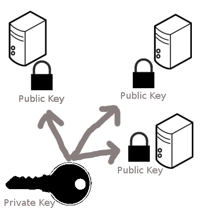
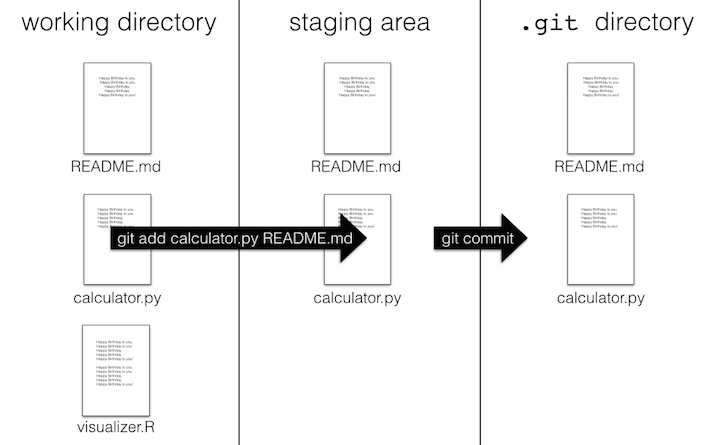

Introduction to version control with Git and GitHub
Learning outcomes
- Implement SSH authentication
- Differentiate between the use of GitHub as a remote hosting service for version control and Git as a version control system.
- Create a Git repository.
- Implement Git’s clone, add, status, commit, pull, and push operations on the command line and their equivalent use in VS Code.
- Understand what implies using the staging area in a Git workflow.
- Recognize the commit as the primary building block for storing a project version characterized by an attached message and a hash that serves as a unique identifier.
Platform in focus Git and GitHub
Introduction
In this lecture, you’ll learn how to manage project changes, collaborate effectively, and maintain a complete project history using Git and GitHub. Let’s get started!
Why version control?
source: “Piled Higher and Deeper” by Jorge Cham, http://www.phdcomics.com
To version control a project, you need two main components: a version control system and a repository hosting service. The version control system, like Git, manages changes to the project, allowing you to share updates, receive contributions, and resolve conflicts. A repository hosting service, such as GitHub, stores your project online, facilitating remote access, collaboration, and distribution of your final product. While technically optional, using a hosting service offers significant advantages like access management, bug tracking, external contributions, and secure cloud backup. Given their benefits and the availability of free accounts, there are few reasons not to utilize a hosting service for your project.
Setting Up and Remotely Accessing SSH Keys for Use with GitHub
Let’s start with some definitions:
Definitions
Secure SHell (SSH) ssh is a secure method commonly used for remotely logging into another computer.
The server is the machine you are connecting to via SSH, which passively waits for incoming connections.
The client is usually your own machine, which initiates the contact with the server.
What are some password-based authentication
Passwords are often short and relatively easy to guess or “break.” For instance, consider a password with 12 characters, where each character can be one of 26 uppercase letters, 26 lowercase letters, 10 digits, or approximately 10 special characters. This results in around 70 possible choices per character, making the total number of possible combinations approximately \(70^{12}\approx 10^{22}\). While this is an extraordinarily large number, patterns in password creation can make them more predictable and easier to guess. More detailed discussions on security and privacy will be covered in future courses.
SSH key-based authentication
SSH key-based authentication involves two components: a public key and a private key. These keys have an asymmetrical relationship. The public key cannot decrypt messages that are encrypted using the private key. Conversely, the private key can decrypt messages that are encrypted using the public key. This setup ensures secure communication by allowing only the holder of the private key to access messages encrypted with the public key.
Understanding public key private key concepts
Consider the public key not as a key but as a padlock. You can make copies of this padlock and place them wherever you like. To secure another machine with your padlock, you would copy it to the authorized_keys file in the ~/.ssh folder on that machine. Conversely, think of the private key as an actual key, which is used to unlock the padlock stored on the other machine. This arrangement ensures secure access to the machine that holds the corresponding padlock.

source: http://blakesmith.me/2010/02/08/understanding-public-key-private-key-concepts.html
You can put your lock at many places
As long as you are using the same lock (public key), you will be able to open it with the same private key.
 source: http://blakesmith.me/2010/02/08/understanding-public-key-private-key-concepts.html
How the lock works
SSH keys are generated using the ssh-keygen command, which creates a pair consisting of a private key (usually named id_rsa) and a public key (typically called id_rsa.pub). You can distribute copies of the public key, which acts like a padlock, to other machines. When you attempt to connect, the other machine encrypts a challenge message using your public key. To gain access, you must demonstrate that you can decrypt this message, thereby proving possession of the corresponding private key. This process ensures that the connection is both secure and authorized.
Why SSH keys over passwords
SSH keys use the RSA cryptosystem
The private key is much longer than a password. A standard now is 4096-bit keys, which means \(> 10^{1200}\) possibilities. This makes it harder for a hacker to break (guess) the password. More on this when we discuss binary numbers next week.
Aside: Quantum computers will be able to break RSA encryption. It is very hard to predict whether this is years or decades away.
Keeping your private key safe
The ssh-keygen command allows you to add a layer of security to your private key by setting a password or passphrase.
It’s crucial that this passphrase remains confidential and not shared with anyone.
If your private key were to fall into the wrong hands, the passphrase would still be required to use it, providing an additional level of security.
Different type of keys
There may be different methods of how to generate private-public key pairs.
The GitHub SSH key generation instructions uses the -t flag to indicate the “type” of key to create, in their instructions they use the ed25519 algorithm to create private and public values.
The general premie to SSH keys is the same, there is a private key that stays on your machine and is never shared with other people, and the public key you can freely share that will be used to authenticate the machine with the private key on it.
Authentication vs. encryption
The system described above focuses solely on authentication. In this process, the client must demonstrate to the server that it is authorized to access the server. This is established when someone with the necessary authority adds the client’s public key to the ~/.ssh/authorized_keys on the server. Once this is done, the server will grant access to anyone who possesses a private key that matches one of the public keys listed.
This authentication process is distinct from the encryption of data transmitted between the client and server. Encryption ensures that the communication between the client and server remains confidential, preventing any potential eavesdroppers from intercepting or listening to the exchange.
 source - https://xkcd.com/936/
source - https://xkcd.com/936/
tl;dr SSH Key Setup
The GitHub SSH key generation instructions walks through how to create, configure, and set up your SSH keys. Below is a summary of the steps from the GitHub documentation and uses the default set of configurations.
Create your SSH key
ssh-keygen -t ed25519 -C "your_email@example.com"Configure Your Remotes
Configure github.com and github.ubc.ca to use your new key.
touch ~/.ssh/configOpen the ~/.ssh/config and add the following lines:
Host github.com
AddKeysToAgent yes
UseKeychain yes
IdentityFile ~/.ssh/id_ed25519
Host github.ubc.ca
AddKeysToAgent yes
UseKeychain yes
IdentityFile ~/.ssh/id_ed25519Host github.com
AddKeysToAgent yes
IdentityFile ~/.ssh/id_ed25519
Host github.ubc.ca
AddKeysToAgent yes
IdentityFile ~/.ssh/id_ed25519Add Your Key to the Remotes
Use your ~/.ssh/id_ed25519.pub file and copy paste the contents to register your SSH key in BOTH the github.com and github.ubc.ca repositories
We suggest you change the theme for github.com and github.ubc.ca so one uses a light theme and the other uses a dark theme so you can easily recognize which site you are using.
You can change these in your account Settings.
What is a Git repository?
A Git repository stores all the necessary information for version control your project in a hidden folder called .git. If you want to know if you are working in a Git repo using the terminal you can use the bash command ls -a as you can see in the image. The -a flag will include into the lists of files displayed on the terminal the hidden folders. If .git is included you are working in a Git repository.
By cloning a repository from GitHub to your computer, you are automatically getting a copy of .git and thus, working on a Git.

Creating a Repository
Lecture 2 Exercise 1
Creating a GitHub Repository
Objective: By completing this exercise, students will learn how to create a repository on GitHub and clone it to their local computer.
Instructions:
- Create a Repository on GitHub:
- Go to GitHub.com.
- Sign in to your account (or create one if you don’t have one).
- Click on the “New” button to create a new repository.
- Provide a name for your repository.
- Optionally, add a description.
- Ensure that “Initialize this repository with a README” is checked.
- Click on the “Create repository” button.
- Clone the Repository to Your Local Computer:
- Open your command line interface (Terminal on Mac/Linux, Command Prompt/PowerShell on Windows).
- Navigate to the directory where you want to clone the repository.
cd path/to/your/directory- Use the
git clonecommand followed by the URL of your newly created GitHub repository.
git clone https://github.com/YOUR_GITHUB_USERNAME/YOUR_REPOSITORY_NAME.git - Verify the Cloning Process:
- Change into the newly cloned repository directory.
cd YOUR_REPOSITORY_NAME- List the files to ensure the README file is present.
ls - Create a
.gitignoreFile:- Open your text editor and create a file named
.gitignorein the root of your repository. - Add entries to ignore files and directories such as:
**/.ipynb_checkpoints/ .DS_Store node_modules/- Save the
.gitignorefile. - Stage and commit the
.gitignorefile.
git add .gitignore git commit -m "Add .gitignore file to ignore unnecessary files" - Open your text editor and create a file named
- Use
git add -pfor Interactive Staging:- Make additional changes to the
README.mdfile or another file in the repository. - Use the
git add -pcommand to interactively stage changes.
git add -pReview each change and decide whether to stage it by typing
y(yes),n(no),s(split the change), orq(quit).Commit the changes with a descriptive message.
git commit -m "Interactively staged changes using git add -p" - Make additional changes to the
Questions:
- What are the steps to create a new repository on GitHub?
- What command do you use to clone a repository to your local computer?
- How do you verify that the repository was successfully cloned?
- How do you create and use a
.gitignorefile? - What is the purpose of the
git add -pcommand, and how do you use it?
Cloning repositories from GitHub
If you only need to make minor edits, you can directly edit files on GitHub using their online editor, eliminating the need to clone the repository.
However, if you intend to run the code on your own machine and make modifications there, you will need to clone the repository to facilitate these changes.
Steps to follow:
Step 1: start by navigating to the specific repository on GitHub.
Step 2: Click the green “Clone or download” button, ensuring the pop-up indicates “Clone with HTTPS” (we will cover SSH authentication later).
Step 3: Copy the provided URL to your clipboard.
Step 4: Next, open Bash on your laptop and navigate to the directory where you wish to clone the repository using the cd command.
Step 5: Type git clone followed by the URL, for example
git clone https://github.com/github_username/repository_name.gitand press enter.Step 6: After the download completes, you can use cd to enter the cloned directory and ls to verify that the contents match what you saw online.
For more details, see Github’s docs on cloning.
Be Careful: do not nest git repositoies. That is, there should not be one git repository inside another git repositoiry. Be careful that when you are using git clone (or git init)
Creating a repository from GitHub (method 1 above)
I recommend that you follow along with these steps on your own machine to practice the commands as you are reading about them.
If it is sometimes unclear where to click or what the output should look like from a command, refer to the corresponding sections of the videos to see exactly what to do (The git workflow one and the ones from lecture 2).
You can create however many repositories on GitHub that you would like and remove them after, so you don’t need to worry about experimenting and creating several new ones.
Steps to follow:
Step 1: Start by navigating to https://github.ubc.ca and ensure you are logged in.
Step 2: Click the green “New repository” button. Alternatively, if you are on your profile page, select “Repositories” and then click the green “New” button.
Step 3: Enter a name for your repository. Decide between making your repository public or private. Remember, a public repository is visible to everyone, though only you can push to it.
Step 4: Check the box labeled “Initialize this repository with a README.” This step allows the repository to be cloned immediately without needing to add a file manually later.
Step 5: Click the big green “Create repository” button.
Step 6: That’s it! You now have a new repository on GitHub!

Lecture 2 Activity 1
How can you check that you are working on a Git repository?
A. By checking if the repository contains a .git directory.
B. By verifying if the current directory has a .repo file.
C. By using the command git status and checking for an error message.
D. By ensuring that the current directory name ends with “.git”.
Adding & committing changes to version controlled files
There are two ways to make changes to your files in the remote repo on GitHub:
The first approach involves editing files directly through GitHub’s web interface. This method is streamlined as it bypasses the need to stage files, offering a convenient option for minor edits. It’s especially suited for quick updates where the lack of staging flexibility isn’t a concern.
Alternatively, if you prefer to work locally, you can modify files on your computer. This method involves a few more steps: first, you add the changes to the staging area, then commit them to your local repository, and finally push the updates back to GitHub.
To demonstrate the first method, let’s edit the README.md file in your GitHub repository. Here are the steps to follow:
Steps to follow:
Step 1: Click on the README.md file link in your repository on GitHub.
Step 2: Click on the pen tool located on the right-hand side of the document.
Step 3: Add your name as the author to the document (e.g., “author: Roald Dahl”).
Step 4: Provide a commit message, such as “Add author info.”
Step 5: Click the big green button “Commit changes” to save your work. This action combines git add and git commit into one step.
Step 6: Download the repository to your local computer by cloning it. Use the command git clone followed by the repository’s URL.
Lecture 2 Activity 2
Is a repository the same as a directory? Can a Git repository be your current working directory?
A. Yes, a repository is the same as a directory, and it can be your current working directory.
B. No, a repository is not the same as a directory, and it cannot be your current working directory.
C. A repository can be your current working directory, but it is not necessarily the same as a directory.
D. A directory is always a repository, but a repository cannot be your current working directory.
Changing and saving version controlled files
To make a change to a file inside a Git repository, start by editing it as you would any other local file. For example, you can use a text editor with a command like code name-of-file.txt.
Once you have made changes to a file in a local Git repository (such as on your laptop), you need to tell Git that you want to record these changes in the version history. This process involves two main steps: adding the changes to the staging area and then committing them.
Committing saves the differences between the current and previous version of the file along with a message describing what you did. These changes are saved in the hidden .git directory within the Git repository.
Here’s a step-by-step guide on how to add and commit changes:
Step 1: Add changes to the staging area:
Use the command git add file-name(s) to move the changes to the staging area.
Step 2: Commit the changes with a descriptive message:
Use the command git commit -m "Clarify the README installation instructions" to commit the changes along with a message that describes what you did.`For more details, see Software Carpentry’s lesson on tracking local changes with Git.
What is the staging area, and why is it there?

Once you reach a point that you want Git to keep a record of the current version of your work, you need to commit (i.e., snapshot) your changes. A prerequisite to this is telling Git which files should be included in that snapshot. We call this step adding the files to the staging area.
Note that the staging area is not a real physical location on your computer; it is instead a conceptual placeholder for these files until they are committed. The benefit of the Git version control system using a staging area is that you can choose to commit changes in only certain files. For example, we add only the two files that are important to the analysis project (analysis.ipynb and README.md) and not our personal scratch notes for the project (notes.txt).
The staging area allows more control over what you are about to commit, allowing you to commit parts of a file or multiple files together with a single descriptive message. To add parts of a file instead of everything type git add -p and then interactively choose which parts you want by typing either n (no) or y (yes) followed by pressing enter for each chunk of code. This workflow is great for reviewing the changes as you add them to the staging area, which ensures you don’t commit anything by mistake. Note that you must omit-p when adding new files, so you would type git add <filename>.
Lecture 2 Activity 3
What is the purpose of the staging area in Git?
A. It allows you to preview and control which changes you want to commit.
B. It automatically commits all changes in the repository.
C. It creates a backup of your files before committing.
D. It permanently deletes files that are not staged.
Commands
To add all updated, new, and deleted files in the git repo you can type git add --all. To only add all updated and new files in the git repo you can type git add .. To only add all updated and deleted files in the git repo you can type git add -u, this is very useful.
To see which files you have staged, before committing them, you can use git status. To see the exact changes you have staged instead of just the file names, use git diff --staged. Finally, if you change your mind and want to removea file from the staging area, you can type git restore --staged name-of-your-file.txt
Commit your files
To include a description in your commit using the terminal, you should write the command git commit and press ENTER. After doing that, a file called COMMIT_EDITMSG will open in your editor. There you can write the title and body of the commit message that you want to associate with your changes.
Push local changes to GitHub
Once you have committed, you changes are saved locally on your laptop. To also upload them to GitHub, you need to “push” the changes to Github. Since you cloned an online repository at the beginning, git knowed that you want to push you changes to that location by default, and you can do so by typing git push without specifyin a URL.
For more details, see Github’s doc on pushing changes to Github.
Always verify that your assignments were uploaded by viewing the online repo!
Pull your changes from a remote repository
Changes pushed by collaborators, or created directly on GitHub will not be automatically sent to your local repository.
If you are working on a project with collaborators, they will also be making changes to files (e.g., to the analysis code in a Jupyter notebook and the project’s README file), committing them to their own local repository, and pushing their commits to the remote GitHub repository to share them with you. When they push their changes, those changes will only initially exist in the remote GitHub repository and not in your local repository.
To obtain the new changes from the remote repository on GitHub, you will need to pull those changes to your own local repository. By pulling changes, you synchronize your local repository to what is present on GitHub. Additionally, until you pull changes from the remote repository, you will not be able to push any more changes yourself (though you will still be able to work and make commits in your own local repository)
If you want to do this with the terminal, you have to pull from the terminal you should use the command git pull.
Lecture 2 Activity 4
Which command would you use to commit all changes with a message?
A. git add -p
B. git commit -m “Your message here”
C. git push
D. git status
Attribution
- Happy Git and GitHub for the useR by Jenny Bryan and the STAT 545 TAs
- Software Carpentry, specifically the Unix Shell and Git lessons